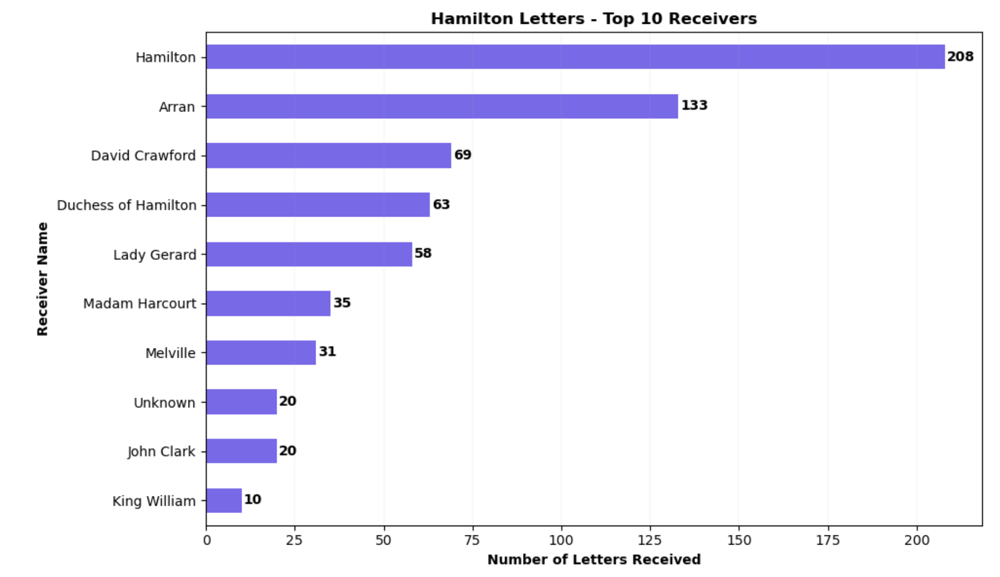
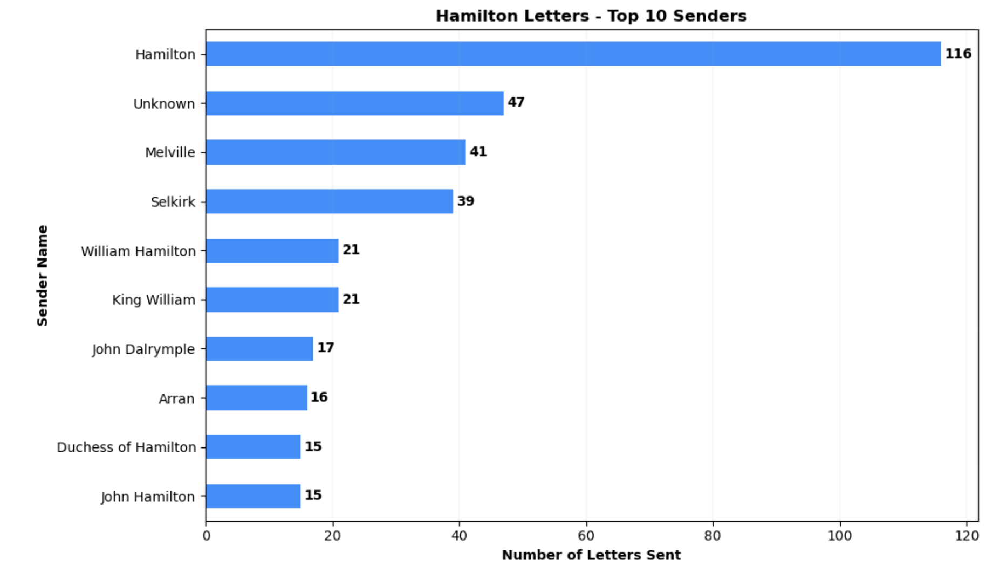
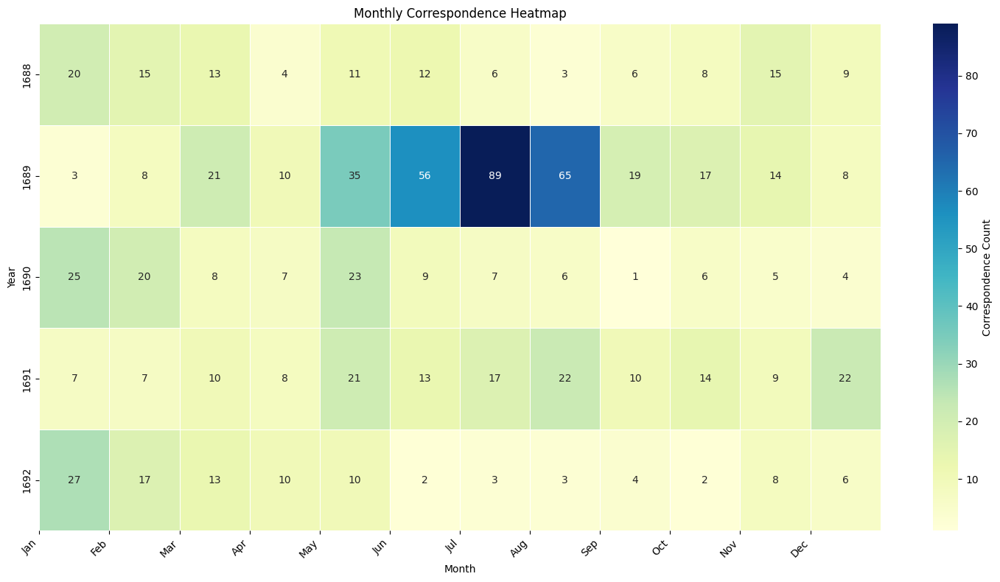
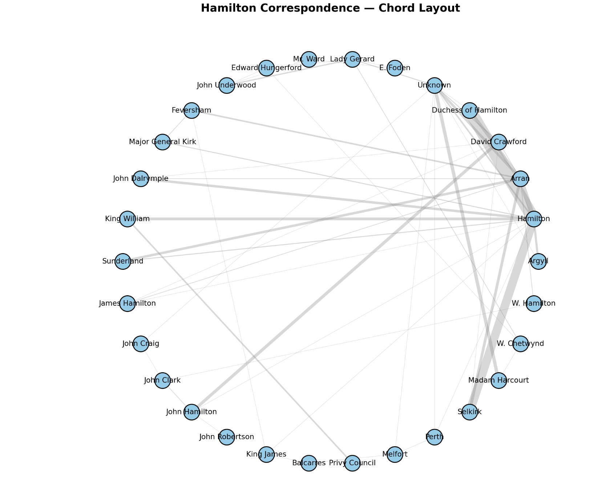
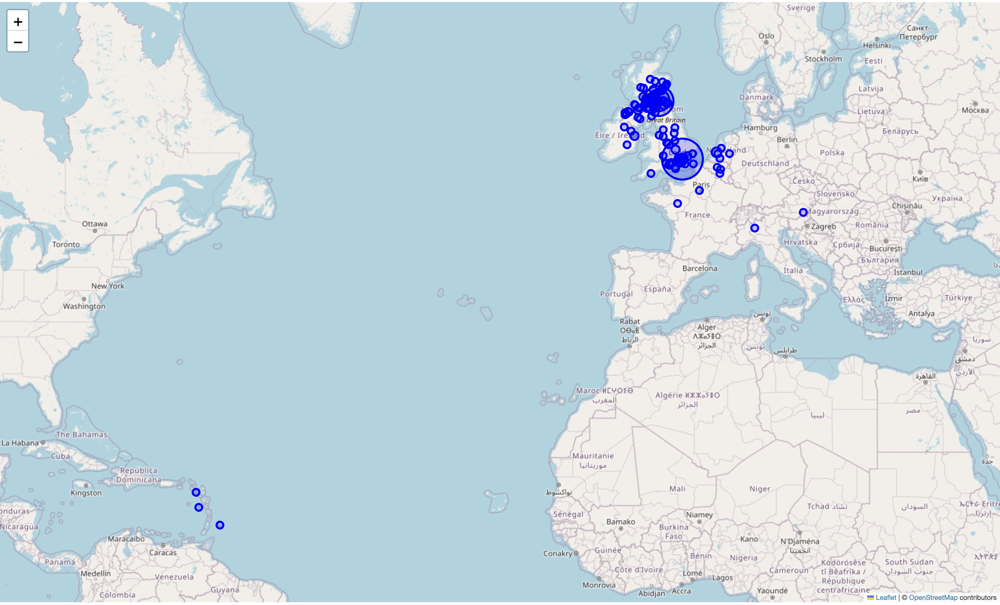

William Douglas-Hamilton occupied a unique position in the Scottish Revolution of 1689. Unlike many of his peers, he navigated the transition from the Stuart to the Williamite regime without losing either his offices or his influence. Network analysis of his surviving correspondence reveals how he managed this: not through loyalty to any single political sphere, but through his structural position as a bridge between them — connecting the monarchy, parliament, the Privy Council, his own family network, and regional power in Scotland simultaneously. Where Melville's network was institutional and state-heavy, Hamilton's was heterogeneous, mixing formal governance with personal patronage, family obligation, and regional authority in ways that made him indispensable to the new regime.
Hamilton served under both Charles II and James II before becoming one of the first Scottish noblemen to reach out to the future William III and Mary II. Under the Williamite administration he held two of the most powerful offices in Scotland simultaneously: High Commissioner to the Scottish Parliament and President of the Privy Council. He presided over the Convention of Estates — summoned at his own request — which formally offered the Scottish crown to William and Mary in March 1689 after declaring that James VII had forfeited it under the Claim of Right. Anne Shukman has argued that Hamilton was an experienced and wily politician who sat on vitally important committees, including those for preparing acts and granting supply. Hamilton was also willing to remain staunchly loyal to the monarch no matter who he or she was.1 He also presided over the Convention of Estates in Scotland, that was summoned at his request, and eventually offered the Scottish crown (which James had according to the Claim of Right "forefaulted") to William and Mary in March 1689.
Hamilton's correspondence is dense and varied. Unlike the Leven and Melville Papers during the Revolution it is not all neatly published in one place or in one collection but scattered. The analysis on this collection is incomplete but telling. Hamilton's correspondence is scattered across multiple repositories and collections, and the analysis presented here is ongoing. The core dataset draws on GD406/1 at the National Records for Scotland. The Papers of the Douglas Hamilton Family, Dukes of Hamilton and Brandon — and contains 317 letters, 7 intercepted letters, warrants, orders, accounts, and proclamations spanning 1688 to 1692. Additional correspondence exists in other pockets of the wider GD406 collection and in printed collections held elsewhere, and this material is being incorporated as the project develops. Readers should treat the findings below as a work in progress: the patterns identified are robust, but the full picture will become clearer as the dataset expands. Hamilton’s position as President of the Privy Council and High Commissioner meant that he operated at the interplay of politics and security and, together with the Treasury and Secretary of State, he provides an important locus point for this investigation. Named individuals were disambiguated and classified by role, allegiance, and institutional affiliation, yielding 408 nodes (264 people, 126 places, 18 orgs/groups), 664 edges with 312 letter links from a total of 938 source records. Edge weights were assigned to reflect the volume of correspondence between nodes. The resulting dataset was then analyzed using standard network metrics — degree centrality, betweenness centrality, and clustering coefficients — computed in Python, with both a network produced in D3.js and mapped using Leaflet.js.
Before reading the analysis below, explore the network graph. Several features are immediately visible: Hamilton sits at the center of a dense cluster, but unlike Melville's predominantly institutional hub, Hamilton's network radiates outward into distinct spheres — family, secretarial, parliamentary, and royal — that overlap only through him. His secretary David Crawford appears as a major secondary node, handling the volume of day-to-day correspondence that flowed through Hamilton House. Look also for the clusters around the Earl of Arran, Lady Gerard, and the Duchess of Hamilton — personal relationships that have no equivalent in Melville's more state-focused correspondence.
Dukes of Hamilton & Brandon · 1688–1702 · Network Graph
Hamilton's networks were dense. Much of his correspondence flowed through his secretary David Crawford. Which isn't that surprising given Crawford handled much of Hamilton’s day-by-day business including any requests for money or work that flowed through the Hamilton House. Degree centrality in Hamilton's network confirms his dominance as a correspondent hub. Hamilton himself registers the highest degree centrality in the corpus at 79. He is followed by his son the Earl of Arran (44), his secretary David Crawford (38), Lady Gerard (33), an unknown sender (27), and the Duchess of Hamilton (17). Eight distinct clusters are visible in the graph, centered on Hamilton, Crawford, Arran, the Duchess, John Clark, Lady Gerard, Madam Harcourt, and an unknown sender. The dataset encompasses correspondence collected through two methods: manuscript transcription and metadata collection from the NRS catalogue. The network reflects the metadata layer, which is why some letters record no sender or recipient — either the name is absent from the original or remains unclear from the manuscript. The networks present reflect the metadata collection rather than the transcriptions themselves, primarily because we can reconstruct that connective network through the detailed metadata available at the National Records for Scotland. This fact also accounts for the absence of a sender or receiver in some of the letters - where either the name is unclear or not present.
The papers included here constitute both state and personal papers. That is why there are distinct hubs outside of state relationships with the monarch and the privy council. The degree centrality rankings reveal something that distinguishes Hamilton's network from Melville's: it is heterogeneous. The top nodes are not exclusively monarchs, secretaries, and institutional bodies — they include a secretary, a son, a wife, and two women whose primary relationship to Hamilton was personal rather than political. This reflects the nature of the collection itself, which combines state papers with personal correspondence in a single archive. But it also reflects something real about how Hamilton exercised power. His influence did not flow only through formal channels; it was sustained and mediated by a dense web of personal relationships that overlapped with his public role. Crawford is the clearest example: as Hamilton's secretary he handled requests for money, patronage, and employment, functioning as a gatekeeper between Hamilton's public office and the individuals seeking access to it. His high centrality is not incidental — it is structural, a consequence of Hamilton's reliance on a trusted intermediary to manage the volume of correspondence his dual offices generated. In terms of clustering, within the graph there are clusters present around the Duke of Hamilton, Lady Gerard, David Crawford, the Earl of Arran, John Clark, the Earl of Perth, and King William.
The Unknown sender node registers a betweenness centrality of 0.48 — second only to Hamilton himself, and substantially higher than Arran (0.39) or Crawford (0.23). This is one of the most analytically interesting features of the graph and currently goes entirely unremarked in the text. A betweenness score that high for an anonymous node means that a significant proportion of the network's bridging paths run through correspondence where the sender cannot be identified. There are several possible explanations worth exploring. Some correspondents may have withheld their names precisely because the content of their letters was sensitive — intelligence reports, accusations, requests that could not be made openly. Another explanation might be archival loss or letter readability: the sender's name may have appeared on a wrapper or cover letter that has not survived. It could also be institutional correspondence: letters sent on behalf of a body rather than an individual (a committee, a garrison, a court) might record no personal sender. The high betweenness of the Unknown node suggests this is not a marginal problem — it sits at the heart of the network's bridging structure, which means the analysis as currently constituted has a significant gap at its center that warrants explicit acknowledgment and further archival investigation.


Betweenness centrality measures how often a node sits on the shortest path between two other nodes — in a letter network, it identifies the individuals without whom communication between different parts of the network would be slower or impossible. The highest betweenness centrality scores in the Hamilton corpus are:
Reading these scores as a ranked list obscures what they collectively reveal. Grouping the key figures by role makes the argument clearer. Hamilton himself sat as the High Commissioner for Parliament and on several defense committees and the privy council. He had an extensive network of communication as evinced by the graph, which included diplomats, kings, and spies.
The family and secretarial network—Arran, Crawford, and the Duchess—appear in both the degree and betweenness rankings, meaning they were not just frequent correspondents but active intermediaries routing communication between Hamilton and others. Arran in particular occupied a complicated position: accused of Jacobite sympathies on multiple occasions because of his position in the western islands, he nonetheless remained a central node in his father's correspondence network, bridging Hamilton’s Williamite public role and the more ambiguous politics of the Scottish periphery.The political-military travelers—Argyll and Dalrymple—register high betweenness because of their physical mobility. They are the political equivalents of diplomats and physically travelled around Scotland meaning their connective tissues were denser than the average letter receiver in the network. Argyll was dispatched on expeditions throughout the period, including operations to suppress insurrection in the western islands. Dalrymple served simultaneously in the Privy Council, the Scottish Parliament, and as one of William’s closest Scottish advisors alongside his father James. Like diplomats, men who moved physically between centers of power accumulated bridging roles that gave them disproportionate influence over information flow. Their high betweenness scores are a quantitative reflection of their political indispensability. Each provided information, intelligence, and status updates of campaigns and their recommendations on next steps.
The monarchical nodes—King James registers a betweenness score of 0.22, largely through the intercepted letters present in the collection. His appearance in Hamilton’s network is a reminder that the Williamite correspondence archive was not a sealed system: intelligence about the Jacobite court flowed into it through interception, making Hamilton's network a site of counter-intelligence as well as administration. King James' betweenness score tells us something even more important: those intercepted letters were not peripheral to the network. They connected nodes that would otherwise have been disconnected, meaning the intelligence gathered through interception was structurally integrated into Hamilton's correspondence operation rather than sitting as an isolated curiosity. This reframes Hamilton's role slightly. He was not only High Commissioner and President of the Privy Council — he was also, in a meaningful sense, running a counter-intelligence operation, and the intercepted correspondence was part of the active information infrastructure of his office.
Together these three groups define what Hamilton's bridging role actually consisted of: he sat at the intersection of family obligation, parliamentary politics, regional military authority, and royal intelligence—and his network held those spheres in relation to each other.


Hamilton’s correspondence is geographically dispersed. The letters in the collection were sent to and from locations across Scotland, England, Northern Europe, and the sugar colonies. Hamilton's correspondence was geographically dispersed, extending across Scotland, England, northern Europe, and notably the sugar colonies of the Atlantic world. The full geographic analysis is forthcoming, but the map below gives an initial picture of the spatial reach of his network. The presence of correspondence nodes in the Atlantic colonies is a detail that warrants attention: it places Hamilton's network within the broader context of Scottish involvement in Atlantic commerce and colonial enterprise in the late seventeenth century, a dimension entirely absent from Melville's more domestically focused correspondence. For the combined geographic analysis of both Hamilton and Melville's networks, see the Melville & Hamilton Map.

Feversham and Arran's Correspondence: 16 Feversham letters, all Nov–Dec 1688, sent from Salisbury and Beaconsfield to Arran document the collapse of Jame's army in England. The letters follow the route of William of Orange's march on London. Lord Feversham was commander of James II's army, which disintegrated in November 1688. These letters are dispatches from the royalist military command during its collapse, preserved because Arran (Hamilton's son) was a regimental colonel in that army.
Holyrood Palace: Hamilton's residence and the administrative heart of his operations, Holyrood Palace was the site of many key correspondences. It was not only a physical location but also a symbol of his political authority and social status, serving as a hub for both official business and personal interactions. 106 of 139 total Holyrood House mentions fall in 1689 alone. Hamilton served as Lord High Commissioner — effectively William III's viceroy in Scotland — operating from the palace. The London↔Holyrood corridor (137 Hamilton–Melville letters) was the nervous system of the Scottish Revolution settlement.
Hamilton–Melville dyad: is a state communication channel, not personal correspondence. The 137 letters between Hamilton (Edinburgh/Holyrood) and Melville (London) at a pace of sometimes daily exchange through July–August 1689. This is royal government operating by post, every letter was political intelligence, instruction, or negotiation about the Kirk settlement, Jacobite rising, and parliamentary management.
Hague Cluster: All 9 Hague mentions are from 1691–92: 7 letters from John Dalrymple at The Hague, 1 from King William, 1 from Selkirk. Dalrymple was accompanying William III's court during the Nine Years' War continental campaigns. This is not a standing Dutch connection — it's the mobile Williamite court temporarily based abroad, and Dalrymple acting as intermediary between William and Hamilton.
Dublin Castle: The 13 interceptions date to 28–29 March 1689, all originating in Dublin Castle or Dublin. They include two letters from King James himself (to Dundee and Balcarres), letters from Melfort, Lord Drummond, and Kennedy to Scottish Jacobites. Hamilton, as Commissioner, was receiving the intercepted correspondence of his opponents — these letters are military and political intelligence about the Jacobite network in Scotland.